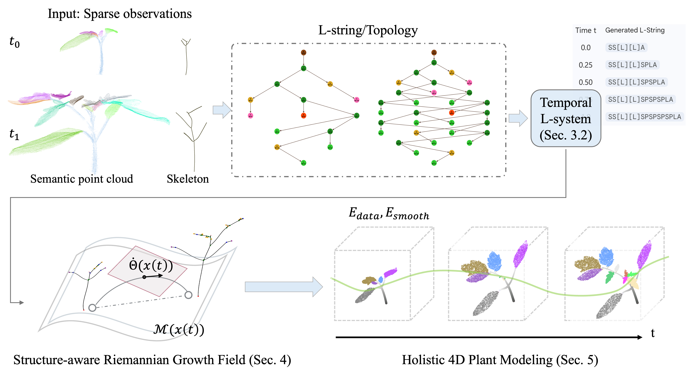
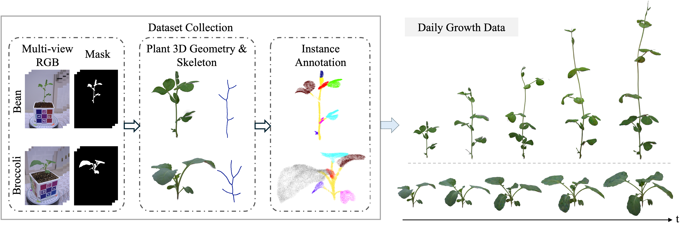

In this paper, we introduce a novel framework for 4D plant growth modeling that reconstructs the continuous geometric and topological evolution of plants from sparse temporal observations. Existing methods mainly rely on dense registration, yet reliable dense sequences are hard to obtain due to scanning constraints and self-occlusions, leaving these approaches struggling under large temporal gaps where rapid organ emergence violates local rigidity. To overcome this, we bridge these gaps by formulating plant morphogenesis as a continuous procedural process on a structure-aware Riemannian growth field; this jointly models topology evolution and geometric deformation, preserving botanical hierarchies and stable spatio-temporal correspondences across distant timepoints. Our key idea is to ground symbolic growth rules within a continuous geodesic flow, where organ development follows biologically modulated trajectories that preserve structural coherence under topological changes. We further contribute a 10-day dual-species dataset with dense geometric and semantic annotations. Experiments demonstrate that our method accurately tracks individual organ growth over time and significantly outperforms state-of-the-art baselines in both geometric accuracy and correspondence consistency.
Rather than matching one scan to the next, Plant4D treats morphogenesis as a continuous procedural process. Symbolic growth rules describe what develops; a Riemannian geodesic flow describes how it moves — and the plant's botanical hierarchy holds the two together.

Overview of our 4D Plant Modeling Pipeline. Given as few as two sparse temporal semantic point clouds, we first recover the structural scaffold and perform continuous topological growth inference to optimize a temporal L-system $L(t)$ (Sec. 3). These symbolic transitions are then grounded in a structure-aware Riemannian growth field on a stratified manifold $\mathcal{M}(x(t))$ (Sec. 4). By integrating a continuous growth velocity field $\dot{\Theta}(x(t))$ governed by morphological smoothness and sigmoid maturation priors, our framework generates a holistic 4D representation with dense spatio-temporal correspondences (Sec. 5).

Bean and broccoli data collection over 10 days. Each day, for every specimen, we capture about 30 multi-view RGB images, extract masks using SAM 3, reconstruct the 3D geometry through a Gaussian Splatting–based multi-view pipeline, extract the skeleton, and perform instance annotation, yielding the temporal sequence of 3D geometry. The same process generalizes to other species.
@misc{kuo2026plant4d,
title = {Structure-aware Riemannian Growth Fields for 4D Plant Modeling},
author = {Kuo, Meng-Yu Jennifer and Kawahara, Ryo},
year = {2026},
eprint = {2608.13007},
archivePrefix = {arXiv},
primaryClass = {cs.CV},
url = {https://arxiv.org/abs/2608.13007}
}
This work was in part supported by the Organization for the Promotion of Gender Equality at Nara Women's University.